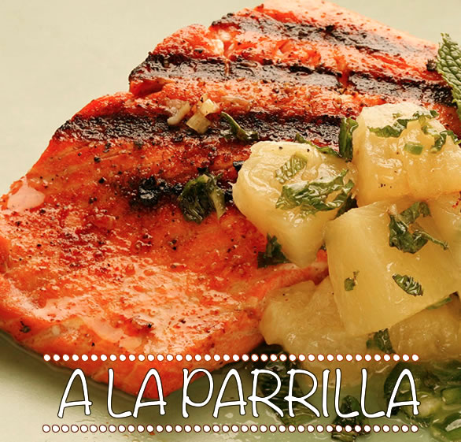
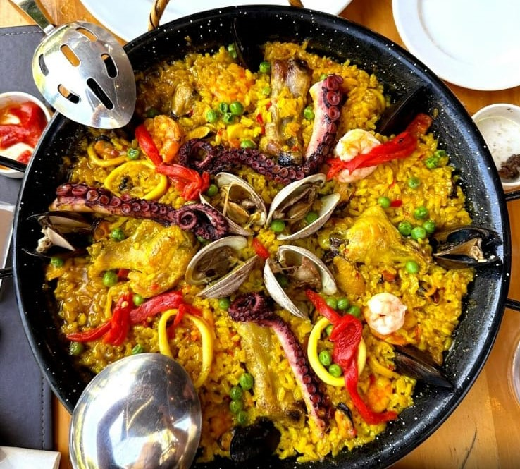
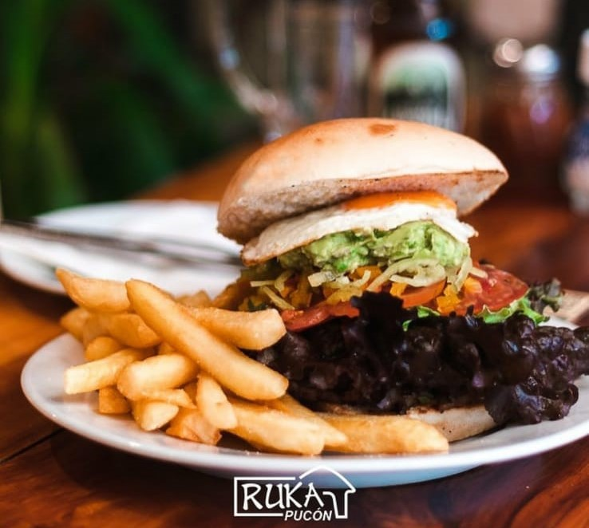
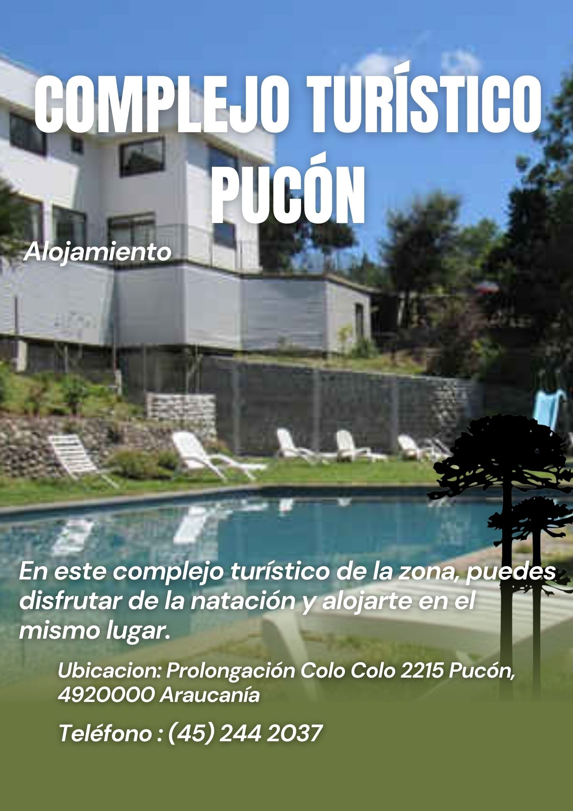
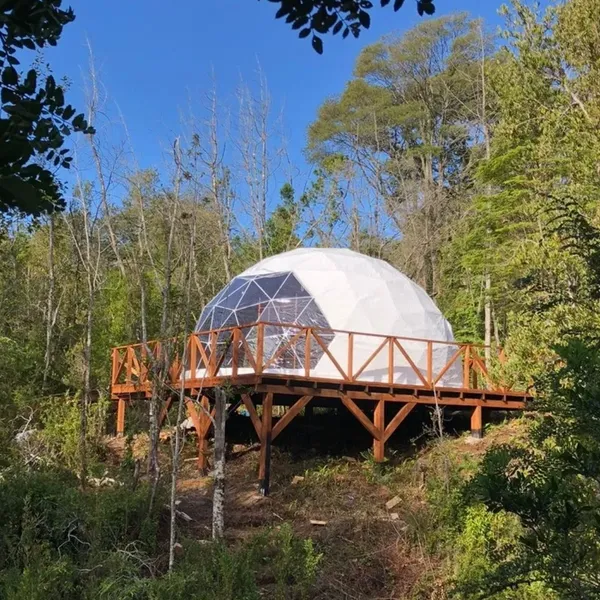
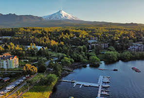
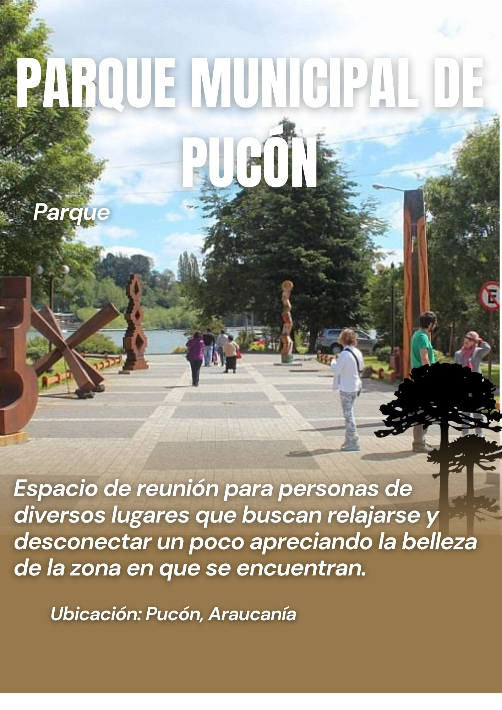

Categorias
Gastronomía de Pucón
La gastronomía de Pucón ofrece una variedad de platos tradicionales que reflejan la riqueza de la cultura
local. Aquí se destacan sabores auténticos y recetas transmitidas de generación en generación.
Platos destacados
-
Salmon a la parrilla

Un plato típico preparado al son de la parrilla.
-
La Paella

Una delicioso Paella mixta bien condimentada.
-
Papas fritas con hamburguesa

Plato tipico chileno, para el bajon
Restaurantes
Entretenimiento en Pucón
Pucón ofrece una amplia variedad de opciones de entretenimiento para residentes y visitantes. Algunas de las actividades de entretenimiento populares incluyen:
Cabañas Alto Bosque
- LLeno de naturaleza y cerca de la ciudad, es un lugar perfecto para ir a alojar en familia

Complejo Turístico Pucón
- En este complejo turístico de la zona, puedes disfrutar de la natación y alojarte en el mismo lugar. Refréscate en la piscina y admira los alrededores, ya que nos encontramos en un entorno campestre.

Sitios turisticos en Pucón
Ruka Glamping Domo geodésico Pvc
- El glamping es una forma de disfrutar de la naturaleza y el aire libre sin sacrificar el confort y las comodidades de un alojamiento lujoso. Combina las palabras "glamour" y "camping", y se ha convertido en una tendencia popular para aquellos que buscan una experiencia de camping más exclusiva y sofisticada.

Mirador La Poza
- Podras disfrutar de una maravillosa vista frente a la playa y sacarte fotos inolvidables

Cultura de Pucón
Playa Pucón
La playa es el punto de encuentro donde se congrega una gran cantidad de personas y donde puedes descubrir una variedad de alimentos que los vendedores ofrecen. Al mismo tiempo, tienes la oportunidad de interactuar con la gente local y aprender sobre su cultura mientras disfrutas de tu tiempo en la playa.

Parque Municipal de Pucón
- El Parque Municipal de Pucón es un espacio de reunión para personas de diversos lugares que buscan relajarse y desconectar un poco. Es un sitio excepcional para conocer el entorno y apreciar la belleza de la zona en la que se encuentra, desempeñando un papel significativo en la vida de la comuna
